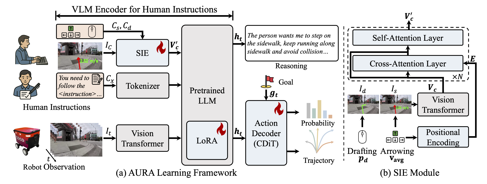
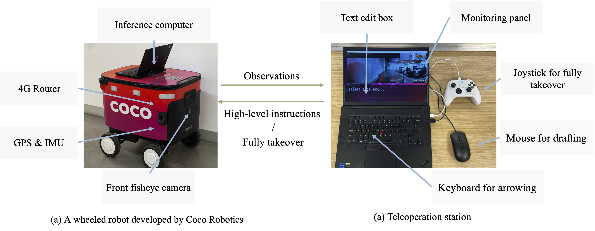

AURA: Multimodal Shared Autonomy for Real-World Urban Navigation
CVPR 2026
Yukai Ma 1,2 , Honglin He 1 , Selina Song 1 , Wayne Wu 1 , Bolei Zhou 1
1 University of California, Los Angeles , 2 Zhejiang University
TL;DR
- AURA (Assistive Urban Robot Autonomy) is a multimodal shared-autonomy framework that decomposes real-world urban navigation into high-level human instruction and low-level AI control, reducing operator burden while improving stability.
🤝 Enables shared autonomy without forcing humans and AI to operate in the same action space, lowering cognitive overhead.
🧠 Introduces a Spatial-Aware Instruction Encoder to align human instructions with visual and spatial context for robust instruction following.
🧪 Proposes a pseudo-simulation shared-control testing pipeline with a judgment module that simulates human takeovers, enabling scalable evaluation of takeover/operation frequency and stability in practice.
AURA Model architecture

AURA pipeline consists of two key components:
(1) Multimodal Instruction Encoder + VLM Backbone: A multimodal encoder that turns egocentric RGB observations and human instructions into fused vision-language-instruction tokens. Human guidance is injected via a special instruction token produced by the Spatial-Aware Instruction Encoder (SIE), which grounds drafting/arrowing prompts with modality-specific geometric embeddings and fuses them with instruction visuals through cross-/self-attention; the tokens are then processed by an InternVL3-2B backbone with LoRA adaptation.
(2) Anchor-Initialized Diffusion Action Decoder (DiT): A diffusion-based policy executor that generates multi-modal future trajectories conditioned on context features, navigation goals, and timestep embeddings. Instead of starting from Gaussian noise, it initializes from 64 trajectory anchors (motion primitives clustered from UrbanWalks), then denoises via a lightweight Transformer to output refined trajectories and confidence scores for control.
Real-World Demo Visualizations Across Interfaces
✏️ Drafting
Drafting 1. AURA follows high-level drafting guidance to complete instruction-following navigation in a real-world sidewalk scene.
⌨️ Arrowing
Arrowing 1. Under arrowing-mode interaction, the operator provides directional arrow guidance while AURA stabilizes low-level trajectory execution.
💬 Texting
Texting 1. In text-mode interaction, operators provide natural-language instructions while AURA converts language guidance into stable low-level navigation behavior.
Real-World Deployment
Teleoperation Platform

We evaluate the instruction-following performance of our model on a wheeled robot developed by Coco Robotics. The platform includes both the onboard robotic infrastructure and a teleoperation interface for monitoring and control. During testing, the inference computer is placed inside the robot’s storage compartment.
Long-Horizon Navigation
Long 1.
Reference
@misc{ma2026auramultimodalsharedautonomy,
title={AURA: Multimodal Shared Autonomy for Real-World Urban Navigation},
author={Yukai Ma and Honglin He and Selina Song and Wayne Wu and Bolei Zhou},
year={2026},
eprint={2604.01659},
archivePrefix={arXiv},
primaryClass={cs.RO},
url={https://arxiv.org/abs/2604.01659},
}